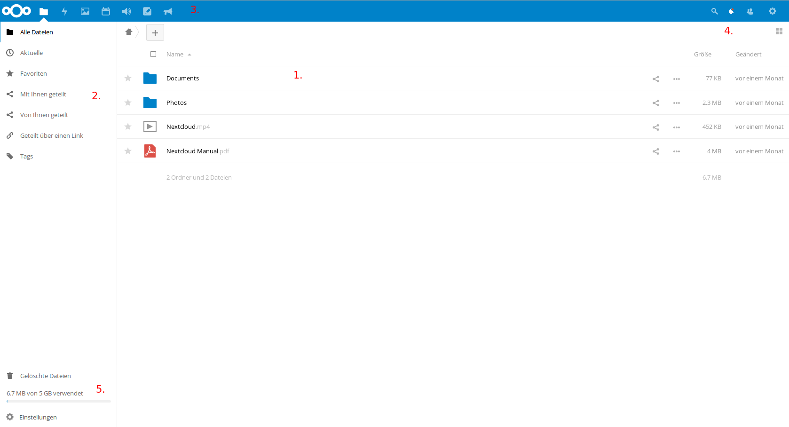
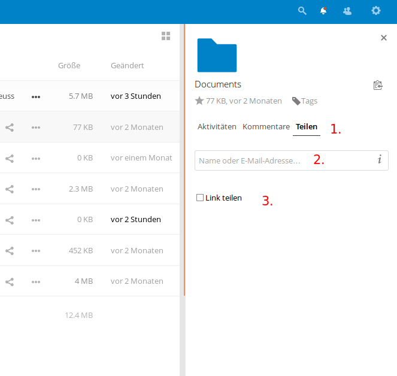

Arbeiten mit der Copbox¶
Zugriff auf die Cloud¶
Zugriff auf die Cloud im Browser erhalten Sie, indem sie auf der Startseite der schuleigenen Homepage auf den Link „copbox“ klicken oder im Browser direkt folgende URL eingeben: https://owncloud.copernicus-gymnasium.de/owncloud
Dort können Sie sich mit ihren Accountdaten anmelden.
Desktop-Client¶
Wie für die herkömmlichen Cloudlösungen auch, existiert auch für Nextcloud ein Programm, mit dem Sie die Cloud auf Ihrem Rechner wie einen normalen Ordner in ihr System integrieren können. Nach der ersten Anmeldung an der Cloud im Browser erscheint ein Pop-up-Fenster, das Ihnen das Herunterladen eines Clients für ihr Betriebsystem anbietet. Haben Sie das Fenster zugemacht und wollen nun aber erneut die Links zu dem Download der Clients sehen, klicken Sie auf der Startseite von Owncloud auf ihren Namen (oben rechts) und wählen Sie den Bereich „Persönlich“.


Hier können Sie ihren persönlichen Cloud-Account konfigurieren und zum Beispiel ein Benutzerfoto hochladen. Wenn Sie etwas nach unten scrollen, werden Sie drei Schaltflächen sehen, die sie zum Download der Desktop-Clients führen.
Hier können Sie die Version des Clients wählen und im Anschluss herunterladen, die ihrem Betriebssystem entspricht. Blau hinterlegt ist der Button für das Betriebsystem, das Sie im Moment verwenden. Die Installation gestaltet sich recht einfach. Sie müssen nach der Installation nur die URL der Cloud eintragen https://owncloud.copernicus-gymnasium.de/owncloud und ihre Zugangsdaten angeben.
Wichtig
Bitte beachten Sie: Wenn Sie das Passwort ihres Zugangs einmal ändern, müssen Sie das neue Passwort im Nextcloud-Programm auf ihrem Rechner natürlich auch entsprechend neu angeben.
Der Inhalt ihres Cloudverzeichnisses auf dem Cloudserver in der Schule wird nach erfolgreichem Verbindungsaufbau direkt auf ihrem Rechner eingebunden.
Mobile Geräte (Android, iOS etc.)¶
Auch für mobile Geräte gibt es Programme, mit denen Sie auf den Inhalt ihres Cloudverzeichnisses zugreifen können. Sie finden diese im Appstore ihres mobilen Gerätes. Der Nextlcoud-Client für Android kostet allerdings so circa einen Euro. Ein kleiner Preis verglichen mit den Vorteilen, die Nextcloud bietet. Das Geld geht an die Entwickler des Projekts. Die Einrichtung eines mobilen Clients geschieht analog zu dem der Desktop-Variante.
Arbeiten mit der Cloud¶
Da vielen die Arbeitsweise mit der Cloud noch fremd ist und sie auch noch nicht alle Möglichkeiten unserer Cloud entdeckt haben, erklären die folgenden Abschnitte das grundlegende Arbeiten mit der Cloud.
Die Startseite¶
Nach der erfolgreichen Anmeldung im Browser gelangen sie zur Startseite der Cloud. Hier sehen sie ihr Cloudverzeichnis und die darin enthaltenen Dateien und Ordner.
Den meisten Platz nimmt die Übersicht über die Ordner und Dateien, die sich in ihrem Cloudverzeichnis befinden (1.). Weiterhin sehen sie am linken Rand einen Bereich, der Ihnen bei Bedarf genauere Informationen über die von oder mit Ihnen geteilten Dateien bietet (2.). Einen schnellen Überblick, wer Ihnen eine Datei oder einen Ordner geteilt hat, finden Sie rechts neben den Dateien/Ordnern. Steht da lediglich „Geteilt“, klicken Sie auf dieses Wort, um genauere Informationen zu erhalten. Links oben neben dem Cloud-Symbol befinden sich die verschiedenen Anwendungen („Apps“), die Ihnen die Cloud bietet(3.).
Sie sehen folgende Bereiche (von links nach rechts):
- „Dateien“: bringt Sie zurück zur Übersicht ihrer Dateien und Ordner
- „Aktivität“: hier finden sie Informationen über die mit oder von Ihnen geteilten Dateien und wer, wann, was damit gemacht hat.
- „Galerie“: eine Sammlung aller Bilder, die sie auf der Cloud gespeichert haben.
- „Kreise“: bietet die Möglichkeit, Gruppen zu erstellen, um Dateien einfach mit mehreren Benutzern zu teilen.
- „Kalender“: wie der Name schon sagt, können Sie hier einen Kalender führen, andere Kalender einbinden,
diese Kalender mit anderen teilen oder mit den Geräte zu Hause synchronisieren. - „Audio-Player“: bietet Ihnen die Möglichkeit, Audio-Dateien direkt aus der Cloud heraus abzuspielen. - „Notizen“: Raum für Notizen, Gedanken, Einfälle - „Ankündigungen“: Hier finden Sie Mitteilungen des Admins, die sicherlich immer einen Blick wert sind.
Genaueres zu diesen „Apps“ finden sie hier „Dateien“
Oben rechts auf der Startseite können Sie nach einem Klick auf die Lupe nach Dateien suchen. Rechts daneben sehen Sie eine Schaltfläche mit einer Glocke. Hier verbergen sich Ankündigungen des Administrators oder sonstige Benachrichtigungen. Ein Klick auf das Icon mit den beiden angedeuteten Personen zeigt Ihnen alle Benutzer der Cloud an, mit denen Sie Dateien geteilt haben. Ganz rechts bringt Sie ein Klick auf das Zahnrad zu den Einstellungen ihres Nutzerprofils (4.)
Unten links sehen Sie die Schaltfläche „Gelöschte Dateien“. Hier verbergen Sie von Ihnen gelöschte Dateien, die sie bei Bedarf wiederherstellen können. Darunter wird Ihnen die aktuelle Belegung Ihres Cloudspeichers angezeigt. Ganz unten finden Sie den Punkt „Einstellungen“. Ein Klick darauf gibt einerseits die Möglichkeit versteckte Dateien in Ihrer Cloud anzuzeigen, andereseits wird hier auch ein WebDav-Link zu ihrem Cloudspeicher erzeugt, mit dessen Hilfe es möglich ist, Ihr Cloudverzeichnis in andere Geräte einzubinden (5.).
Dateien hoch- und herunterladen¶
Der grundlegende Vorteil einer Cloud besteht natürlich darin, dass Sie von überall und mit (fast) allen Geräten auf die Dateien in der Cloud zugreifen können. Dazu müssen die Dateien erst einmal in die Cloud geladen werden. Das kann auf zwei Wegen erfolgen.
1. Dateien mittels eines Desktop-Clients ( Windows, Mac oder Linux) oder einer App (IOs, Android) hochladen¶
Wenn Sie Nextcloud-Client auf ihrem Rechner installiert haben (dazu siehe Desktop-Client) und diesen bei der Ersteinrichung mit der Cloud verbunden haben, wird im Dateisystem ihres Computers ein Ordner erstellt, die direkt mit der Cloud verbunden ist (natürlich nur, solange eine Internetverbindung besteht). Dieser Ordner verhält sich wie jeder andere Ordner auf ihrem PC auch. Dateien und Ordner, die Sie in diesen Cloudordner kopieren, werden sofort in die Cloud hochgeladen. Dateien, die mit Ihnen geteilt werden, werden automatisch in diesen Ordner heruntergeladen. Das ist mit Sicherheit die komfortabelste Methode, um mit der Cloud zu arbeiten. Hinzu kommt außerdem, dass die Daten nun auf ihrem Rechner und in der Cloud vorhanden sind. D.h. sollte, der Cloudserver nicht erreichbar sein oder die Daten dort verschwunden sein, verfügen Sie weiterhin über die Daten, da sie sich ja nun auch auf ihrem Rechner befinden. Den Nextcloud-Client gibt es auch für Android- und IOsgeräte, ja wahrscheinlich sogar für Windows-Smartphones. Wollen Sie also Dateien von ihrem Tablet oder Smartphone in die Cloud bringen oder umgekehrt, empfiehlt sich der Download der Owncloud-App im Appstore ihres Smartphones. Siehe dazu auch: Mobile Geräte (Android, iOS etc.)
Wichtig
Die Verwendung des Nextcloud-Clients ist die beste Art, mit der Cloud zu arbeiten.
2. Dateien mit dem Browser hoch- und herunterladen.¶
Die Cloud bietet Ihnen die Möglichkeit, von überall auf ihre Daten zuzugreifen. Sie benötigen nur eine Internetverbindung und einen Browser. Wie Sie per Browser auf die Cloud des Copernicus-Gymnasiums zugreifen, wurde bereits weiter oben erklärt (siehe Abschnitt zugriff-sk) Um im Browser Dateien in die Cloud zu laden, gehen Sie folgendermaßen vor:
- Klicken sie einmal auf das Plus unterhalb des blauen Balkens
- Klicken Sie einmal auf „Hochladen“
- Wählen Sie in dem sich öffnenden Fenster die Datei(en) aus, die sie hochladen möchten (Sie können auch mehrere Dateien im selben Ordner auf einmal auswählen, indem Sie die „Shift-Taste“ gedrückt halten und mit den Pfeiltasten die entsprechenden Dateien auswählen).
- Klicken Sie anschließend auf „öffnen“.
- Sie sehen nun einen blauen Balken, der den Fortschritt des Uploads anzeigt. Je nach Größe der Datei(en) kann der Upload eine Weile dauern. Haben Sie Geduld.
- Sie können auch einfach Dateien per „Drag&Drop“ vom PC in das Browserfenster ziehen, um Dateien in die Cloud hochzuladen.
Mehrere Dateien und Ordner auswählen¶
Um den workflow zu verbessern können, Sie auch mit mehreren Dateien gleichzeitig arbeiten.
- Bewegen Sie die Maus über die Dateien. Die ganze Zeile in der Übersicht erscheint nur leicht eingegraut.
- Sie werden feststellen, dass sich die Anzeige des Icons verändert hat und nun am rechten Rand der Datei oder des Ordners ein kleines leeres Kästchen zu sehen ist.
- Klicken Sie in dieses Kästchen und es wird mit einem Haken markiert.
- Über der Liste mit Dateien wird nun angezeigt, was Sie alles markiert haben. Dort ist auch ein weiteres leeres Kästchen zu sehen. Wenn Sie dieses anklicken, werden automatisch alle Dateien und Ordner in der Übersicht markiert. So lassen sich viele Dateien auf einmal herunterladen oder teilen.
Erstellen von Dateien und Ordnern in der Cloud¶
Sie können Ordner und Dateien (Textdateien) auch direkt in der Cloud erstellen und bearbeiten (Genaueres zum Bearbeiten von Textdateien finden Sie im Abschnitt dokumente-sk)
- Klicken Sie auf das + Symbol.
- Klicken Sie auf „Ordner“ oder „Textdatei“.
- Geben Sie den Namen des Ordners oder der Textdatei an.
Der neu erstellte Ordner oder die angelegte Datei erscheint kurz darauf in der Übersicht ihrer Dateien. Möchten Sie eine Datei in einem bestimmten Ordner verschieben, können Sie das per Drag&Drop erledigen.
Dateien mit anderen teilen¶
Auf der Startseite sehen sie alle Dateien und Ordner, die sich in ihrem Cloud-Verzeichnis befinden. Sie sehen auch, wer Dateien mit Ihnen geteilt hat. (1.) Um Dateien und Ordner mit anderen Personen oder Gruppen zu teilen, klicken auf das Teilen-Symbol (2.).
Es öffnet sich rechts ein Bereich, der Detail des zu teilenden Objekts enthält.
Um eine Datei oder einen Ordner zu teilen, stellen Sie sicher, dass das Wort „Teilen“ markiert (fett und unterstrichen) ist (1.). Falls Sie eine Bemerkung zu der ausgewählten Datei abgeben möchten, klicken Sie auf „Kommentare“. Personen, mit denen Sie diese Datei teilen, können diesen Kommentar sehen. Haben Sie auf „Teilen“ geklickt, sehen Sie ein Eingabefeld, in das Sie den Namen der Person oder Gruppe eintragen, mit dem Sie die Datei(en) oder Ordner teilen möchten (2.). Erscheint der richtige Name, klicken Sie auf ihn und die Datei oder der Ordner wird mit der entsprechenden Person oder Gruppe geteilt. Setzen Sie den Haken in der Box „Link teilen“, wenn Sie nur den Link zu einem bestimmten Objekt teilen wollen (3.). Den auftauchenden Link können Sie z. B. per Email verschicken. Der Empfänger kann dann auf das verlinkte Objekt zugreifen. Praktisch, wenn Sie eine Datei mit jemandem teilen möchten, der sonst keinen Zugang zu dieser Cloud hat.
Wichtig
Wenn Sie NICHT möchten, dass die Person, mit denen Sie ein Objekt geteilt haben, dieses bearbeiten kann, dann entfernen Sie den Haken neben „kann bearbeiten“.
Neben dem Namen finden Sie weitere Optionen. Setzen Sie den Haken, wenn Sie ein Bearbeiten der Datei etc. erlauben möchten. Wenn Sie dann auf die drei Punkte neben Namen der Person, die etwas geteilt bekommt, klicken, öffnet sich ein Fenster mit verschiedenen Optionen, die es Ihnen erlauben zu bestimmen, was die andere Person mit dem Objekt anstellen darf. Setzen Sie die Haken, wie es Ihnen am besten erscheint.
Die Teilung wieder aufheben¶
Haben Sie versehentlich die falsche Datei geteilt oder etwas mit der falschen Person oder Gruppe geteilt, haben Sie in den Optionen, die sich hinter den drei Punkten verbergen, die Möglichkeit, die Teilung wieder rückkgängig zu machen. Klicken Sie einfach auf den letzten Eintrag in der Liste der Optionen „Freigabe aufheben“.
Das geteilte Objekt verschwindet daraufhin aus dem Cloudverzeichnis der Person(en), mit der Sie es geteilt haben.
Gelöschte Dateien¶
Sollten Sie einmal versehentlich Dateien aus der Cloud gelöscht haben, so lassen sich diese ganz einfach wiederherstellen.
- Im Startfenster der Owncloud sehen Sie links unten eine Schaltfläche „Gelöschte Dateien“.

- Klicken Sie darauf, um sich eine Liste mit den von Ihnen gelöschten Dateien und Ordnern anzeigen zu lassen.
- Klicken Sie auf die Schaltfläche „Wiederherstellen“, um die Datei oder den Ordner wiederherzustellen.

Die Datei bzw. der Ordner befindet sich kurz darauf wieder unter ihren Dateien. Mit einem Klick auf Haussymbol (oben, Mitte links) oder auf die Schaltfläche „Alle Dateien“ gelangen Sie wieder zur Startseite zurück.

Die verschiedenen Apps¶
„Dateien“¶
Ein Klick auf dieses Symbol bringt Sie wieder zurück zur Startseite, wo Sie ihre gespeicherten Dateien und Ordner finden. Zur Arbeitsweise mit Dateien und Ordnern siehe Arbeiten mit der Cloud
„Aktivität“¶
Hier finden Sie verschiedene Informationen z. B. dass sie zu einem Kreis eingeladen wurden.
„Talk“¶
Mit „Talk“ kann man mit anderen Benutzer der Copbox in Kontakt treten. Es handelt sich hierbei um eine Art Messenger, für den es sogar ein App fürs Smartphone gibt (zumindest für Anroid). Sogar Videokonferenzen sollen damit möglich sein, was ich aber noch nicht ausprobiert habe. Man kann hier auch Gruppenchats einrichten.
Benutzerhandbuch¶
Weitere Informationen finden Sie im englischsprachigen Benutzerhandbuch von Nextcloud, das Sie unter folgender URL finden: https://docs.nextcloud.com/server/12/user_manual/
| [1] | Im Sommer 2017 haben wir eine technische Änderung vorgenommen und sind von Owncloud zu Nextcloud gewechselt. Zu erreichen ist die neue Cloud aber unter dem alten Namen https://owncloud.copernicus-gymnasium.de/owncloud. |